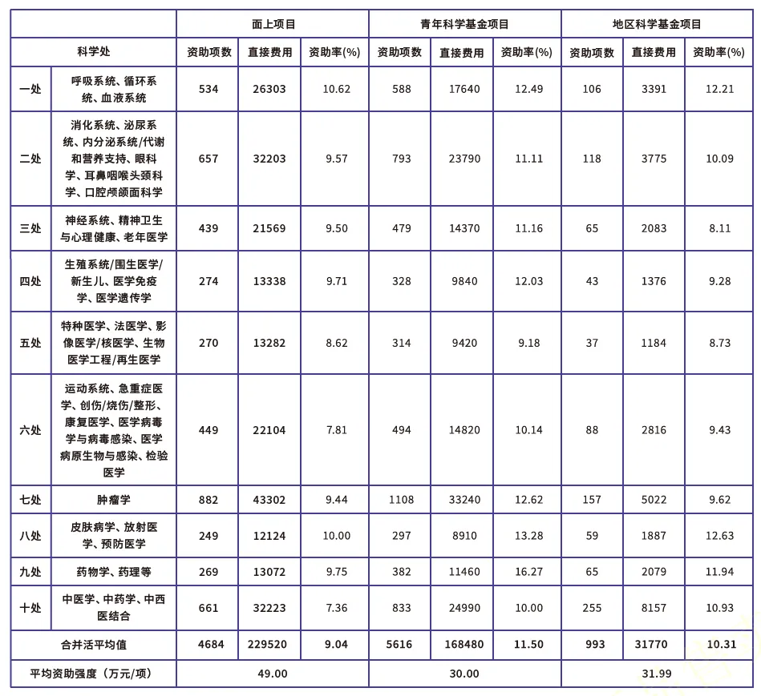
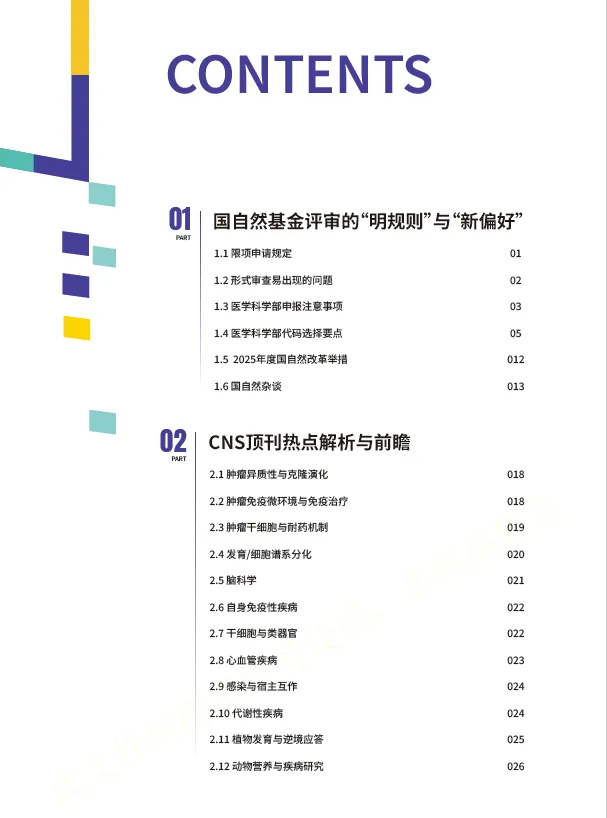
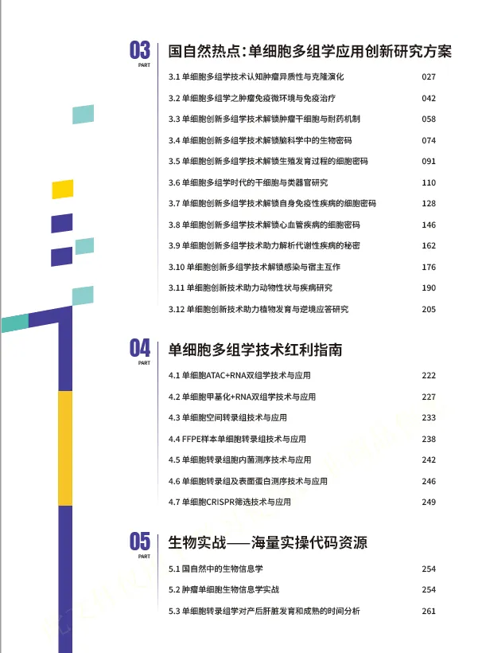
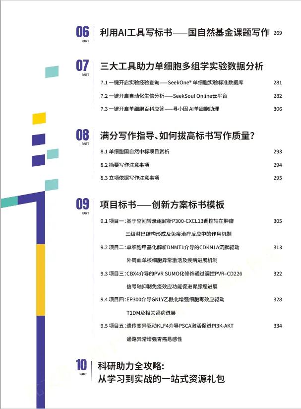

2026国自然的序幕早已揭开
原文：https://mp.weixin.qq.com/s?__biz=MzAwMzIzOTk5OQ==&mid=2247531907&idx=1&sn=7ceeb811edf9e65d9401a288d66f3710&chksm=9b3c04d3ac4b8dc575726fc14ef21ae6a47bcb7df3f1ab91187bf2bad9908d8875a070b29bdc#rd 合集：基金申报
愈演愈烈
国自然的中标率是残酷的：总体中标率为12.26%，但医学部面上项目资助率从去年的13%跌至约11%，青年项目情况也不容乐观，更别提H18肿瘤口、中医药等白热化方向。因此，探究国自然的内在规律至关重要。 lncRNA、circRNA、RNA甲基化的申报热潮已经逐渐冷。现在谁的本子里不得加几句单细胞测序、空间转录组、类器官。国自然一直都是我们科研道路上最重要一环，为了给大家提供一个全面、实用的工具书，帮助大家更好地把握国自然项目的申报方向和策略，我们整理出版了**《 国自然单细胞多组学大红书申报宝典》**。旨在帮助科研人员在前沿技术的纷繁脉络中找到创新的切入点，实现“科学问题与基金导向的同频共振”。

生物信息学在国自然申请中扮演着至关重要的角色，它不仅是处理和分析海量生物数据的关键工具，更是推动生命科学研究从数据驱动向知识发现转变的核心驱动力。在申请中，生信部分需要紧密结合研究目标，明确其在解决复杂生物学问题中的具体应用，如通过高通量数据分析挖掘潜在的基因调控网络、鉴定疾病相关标志物或揭示微生物群落功能等。
此宝典重点聚焦于国自然中的单细胞多组学技术涵盖十大部分:
01：国自然基金评审的“明规则”与“新偏好”。
02：CNS顶刊热点解析与前瞻
03：单细胞多组学应用创新研究方案
04：单细胞多组学技术红利指南
05：海量实操代码资源
06：利用AI工具写标书⸺国自然基金课题写作
07： SeekOne®单细胞实验标准数据库/SeekSoul Online云平台/寻小因 AI单细胞助理
08:标书写作指导
09：标书模板展示
10：从学习到实战的一站式资源礼包
** **
获取方式：
没错，其中第五章就是由Biomamba生信基地分享的生信实战内容，包含多个生信实战案例。看完这本宝典，单细胞与空转思路文思泉涌，生信技能哐哐增长，可以联系客服微信[Biomamba_zhushou]获得一手资料。我们还为大家准备了交流群~
大红书核心模块：20万字干货+12大创新方案+ 5篇标书案例+单细胞创新多组学技术应用
不仅有：
1
洞察先机：摸透国自然评审的“明规则”与“新偏好”（青椒医学）
-
拆解近几年最新评审趋势、资助倾向，精准对齐评审期待
-
解读学科代码背后的“隐藏逻辑”，避免方向选错、申报错位
-
盘点高频“踩坑点”（如创新点表述、技术路线漏洞），帮你提前避坑
2
追踪前沿：CNS顶刊热点汇总（BioArt)
- 梳理近1年CNS级刊物中“单细胞多组学”突破性研究
3
技术赋能：单细胞多组学“从0到1”创新解决方案
-
全面介绍单细胞多组学产品矩阵，匹配不同研究场景需求
-
提供单细胞创新技术一站式科研支持方案
-
附真实高分文章案例：看别人如何用单细胞多组学产出CNS级成果
4
标书升华：满分写作指导+AI工具双助攻（青椒医学、华哥生信）
-
拆解“中标标书结构”，教你突出科学假说层次感、强化逻辑链
-
分享AI工具DeepSeek使用方法，效率翻倍不踩雷
-
提供5篇创新方案标书模板，从模仿开始写标书
5
生物信息：如何借助生信分析抢占先机 (Biomamba生信基地)
更有：
** **
三大在线工具助力单细胞多组学实验数据分析！即使生信零基础也能上手资源礼包：从学习到实战的“一站式弹药库”。
在本手册的编撰过程中,我们历经了无数次的研讨、修改和完善,每一个细节都凝聚着众多人的智慧和心血。
在此,我们怀着无比感激的心情,向所有给予我们支持和帮助的学会团体、专家、技术合作单位与媒体平台致以最诚挚的谢意。
它不止是一本“申报指南”，更会成为你桌面上最常翻的“决策参考”和“灵感来源”！
✅这本手册，特别适合这样的你：
-
不满足“跟风申报”，想在2026国自然提出“引领性课题”的申请者；
-
希望将研究方向升级为“单细胞多组学”，建立技术壁垒的科研团队；
-
盘点高频“踩坑点”（如创新点表述、技术路线漏洞），帮你提前避坑
红宝书目录一览




如何联系我们

 留一个领取资料、开箱即用的单细胞分析镜像的微信号[Biomamba_zhushou]，方便各位随时交流。同时我们也构建了交流群矩阵，欢迎大家入群讨论。
大家可以阅读完这几篇之后添加给生信入门初学者的小贴士
没有检索，就没有发言权
留一个领取资料、开箱即用的单细胞分析镜像的微信号[Biomamba_zhushou]，方便各位随时交流。同时我们也构建了交流群矩阵，欢迎大家入群讨论。
大家可以阅读完这几篇之后添加给生信入门初学者的小贴士
没有检索，就没有发言权
已有生信基地联系方式的同学无需重复添加

 您点的每个赞和在看，我都认真当成了喜欢
您点的每个赞和在看，我都认真当成了喜欢